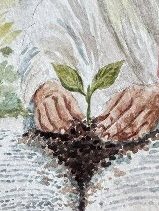
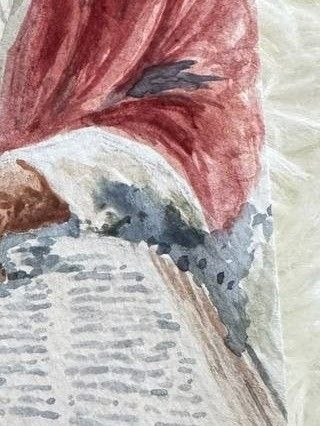
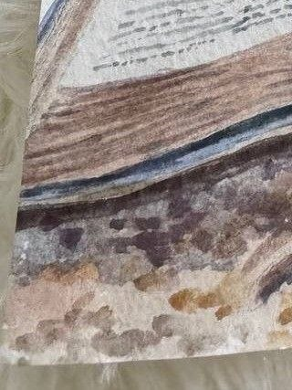
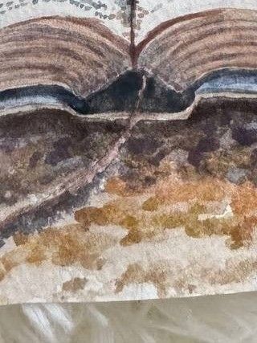
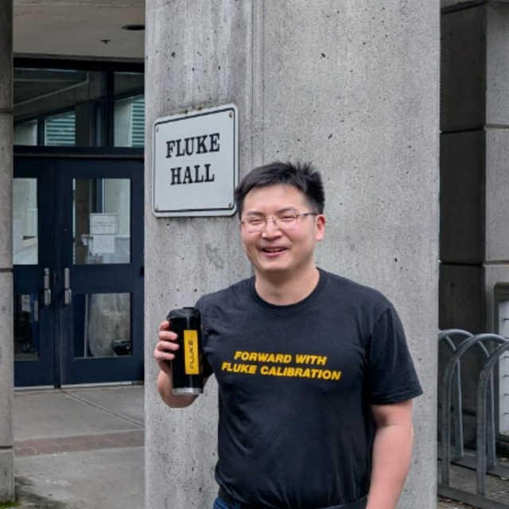

David L.
Elder (Scripture/Doctrine)
Hear My Testimony"Ask and it will be given to you; seek and you will find; knock and the door will be opened to you. For everyone who asks receives; the one who seeks finds; and to the one who knocks, the door will be opened."— Matthew 7:7-8 NIV
Jesus Christ is the Son of God, sent to earth to save us from sin that leads to death.
"For the wages of sin is death, but the gift of God is eternal life in Christ Jesus our Lord."
— Romans 6:23 NIV
He is the Word made flesh, the promised Messiah, and the only way to eternal life with God.
"In the beginning was the Word, and the Word was with God, and the Word was God."
— John 1:1 NIV
His Birth: Jesus was born of the virgin Mary, from God the Father, in Bethlehem, fulfilling ancient prophecies of the promised Messiah. Though fully God, He became fully human to walk among us and live out our struggles.
"For we do not have a high priest who is unable to empathize with our weaknesses, but we have one who has been tempted in every way, just as we are—yet he did not sin."
— Hebrews 4:15 NIV
His Life: Jesus lived a perfect, sinless life. He taught with authority, performed miracles, healed the sick, and showed compassion to the lost. He demonstrated what it means to love others by loving God.
"This is how we know what love is: Jesus Christ laid down his life for us. And we ought to lay down our lives for our brothers and sisters."
— 1 John 3:16 NIV
His Death: Jesus willingly died on the cross, taking the punishment for our sins.
"For God so loved the world that he gave his one and only Son, that whoever believes in him shall not perish but have eternal life."
— John 3:16
His Resurrection: On the third day, Jesus rose from the dead, conquering sin and death forever. His resurrection proves His power over death and guarantees eternal life for all who believe in Him.
"Jesus said to her, 'I am the resurrection and the life. The one who believes in me will live, even though they die; and whoever lives by believing in me will never die. Do you believe this?'"
— John 11:25-26 NIV
His Promise: Jesus promised to return one day to judge the living and the dead, and to establish His eternal kingdom. He calls us to follow Him daily, live out His pure love, and make disciples of all nations.
"I am the way and the truth and the life. No one comes to the Father except through me."
— John 14:6
Do you want to know Jesus personally? You must repent of your sins, turning away from your past life, and accept Jesus Christ as your Lord and Savior. If you feel ready to accept Jesus into your life and want to do it with a friend, we invite you to call now.
This is a REAL person, please text if call is unavailable, Jesus loves you!
S.E.E.D. stands for Serve with Grace, Encounter the Word, Embrace Fellowship, and Disciples of all Nations. Our hand-stitched logo below tells our story in nine panels — four S.E.E.D. values, our mission and vision, and the three phases of how a single seed becomes a harvest. Hover any tile (or tap on mobile) to read what's behind each one.







The dedicated servants behind Seed the Word Ministry.
Elder (Scripture/Doctrine)
Hear My Testimony
Ministry Leader
Hear My TestimonyAdministrator (Social Media)
Hear My Testimony
Worship Leader
Hear My TestimonyPrayer Warrior (aka Prayer Dog) 🐕
Hear My TestimonyMonday through Friday we read one chapter a day together, and on Saturdays we review the week — catching up on missed days and diving deeper as a community.
We began in the New Testament (starting with Matthew) because our ministry is built for newcomers to faith — it's the clearest place to meet Jesus. As we grow together, we're starting to weave the Old Testament into our Study Saturdays — pulling out the passages that give the New Testament its depth, so when we read Jesus, we see Him echoed all the way back.
See This Week's PlanFellowship isn't a building — it's how we show up for each other through the week.
Our weekly rhythm is built around two dedicated days:
"Do not be anxious about anything, but in every situation, by prayer and petition, with thanksgiving, present your requests to God. And the peace of God, which transcends all understanding, will guard your hearts and your minds in Christ Jesus. Finally, brothers and sisters, whatever is true, whatever is noble, whatever is right, whatever is pure, whatever is lovely, whatever is admirable — if anything is excellent or praiseworthy — think about such things."
— Philippians 4:6-8 NIV
"Yet a time is coming and has now come when the true worshipers will worship the Father in the Spirit and in truth, for they are the kind of worshipers the Father seeks. God is spirit, and his worshipers must worship in the Spirit and in truth."
— John 4:23-24 NIV
Prayer and worship are woven into everything we do. Got an idea for how we can lead worship better, or a song you'd love us to try?
Suggest a Better WayWe give away Bibles — on the street, to newcomers, to anyone who wants one but can't afford one. The same bundles can also be supported through our store, which lets one person's gift become another person's first Bible.
Our whole goal is finding creative, faithful ways to put God's Word into people's hands. If you've got an idea — an event, a community we haven't reached, a new approach — we want to hear it.
Suggest an Outreach Idea"He answered and said unto them, He that soweth the good seed is the Son of man;"
— Matthew 13:37 KJV
Questions, prayer requests, volunteering, a donation-funded Bible bundle — pick whichever way you'd like to reach us.
Quick questions, hellos, or if you just want to say hi.
@seedthewordOur community chat — daily discussion, prayer, and fellowship.
Open channelBest for longer notes, private requests, or when you'd like a written reply.